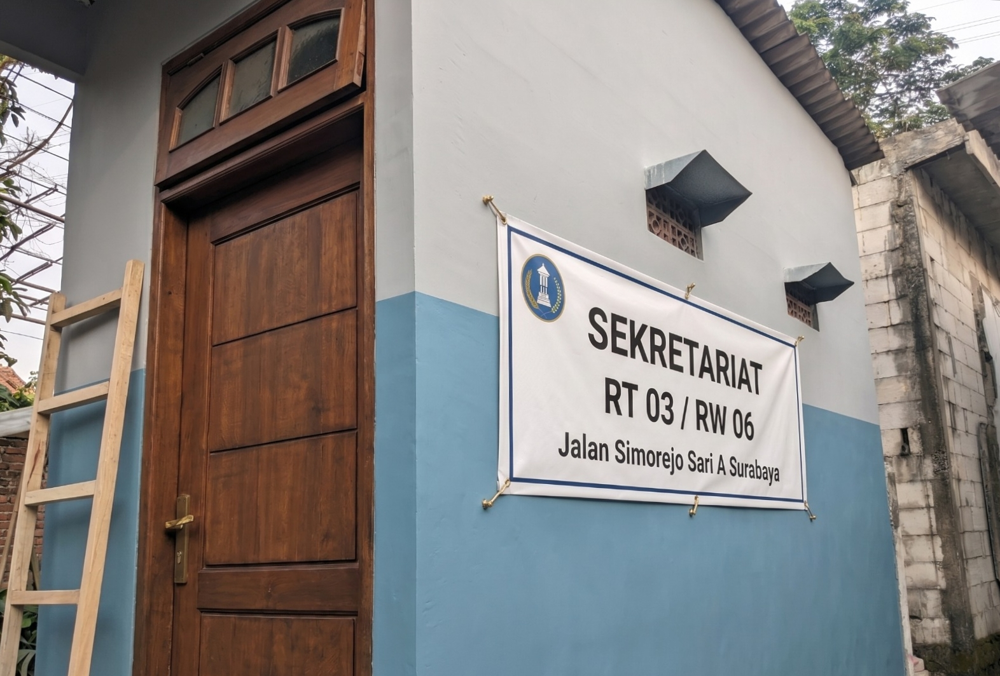

Struktur Kepengurusan
Pengurus RT yang aktif menjaga kenyamanan lingkungan.

Bapak Bagus
Ketua RT
Bapak Yusuf
Wakil Ketua RT
RT kami hadir sebagai pusat komunikasi warga yang menjunjung tinggi kebersamaan, keamanan, dan gotong royong lingkungan.

"Mewujudkan lingkungan RT yang mandiri, harmonis, dan digital-ready berbasis kekeluargaan."
Pengurus RT yang aktif menjaga kenyamanan lingkungan.
Sistem keamanan lingkungan aktif selama 24 jam dengan ronda dan CCTV kawasan.
Pengajuan surat dan kebutuhan administrasi warga dilakukan lebih cepat dan efisien.